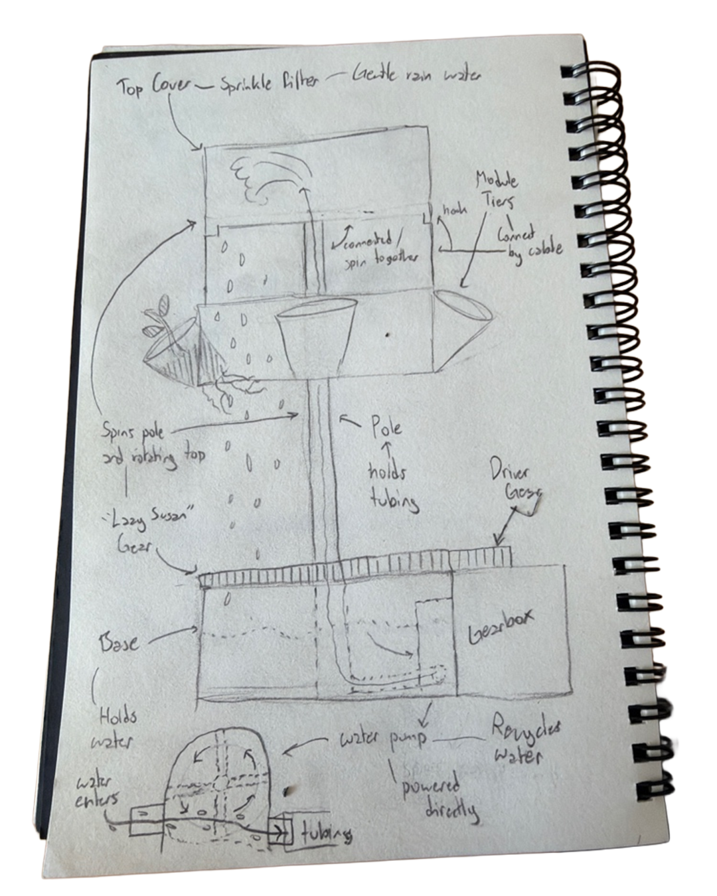
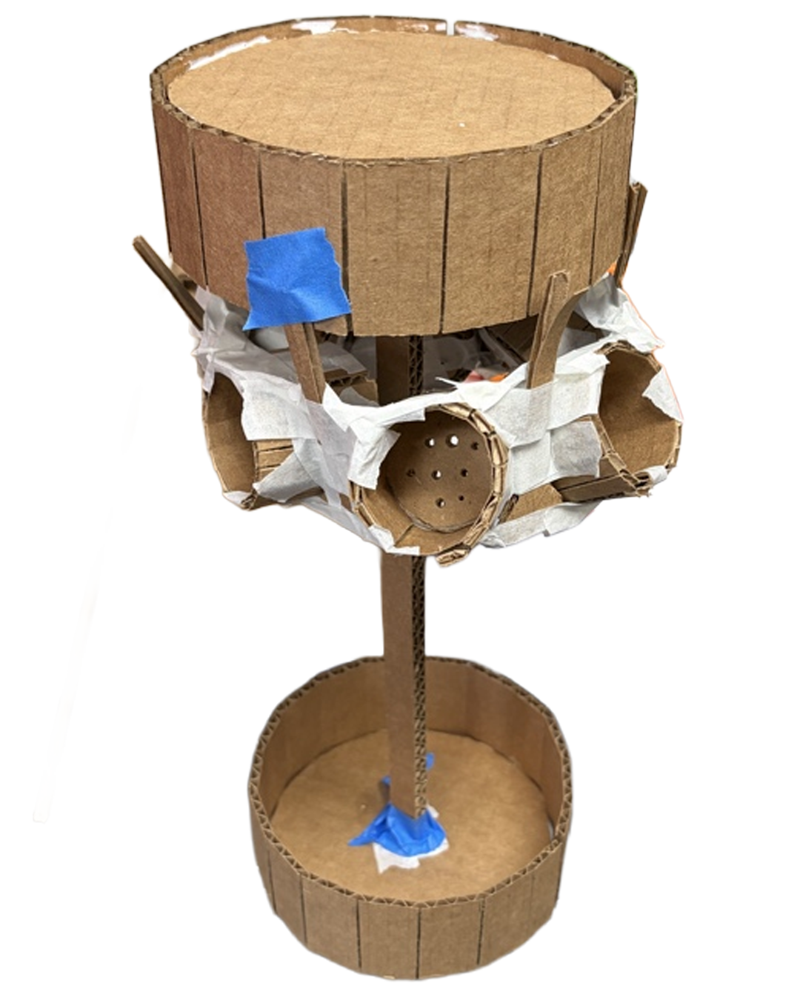
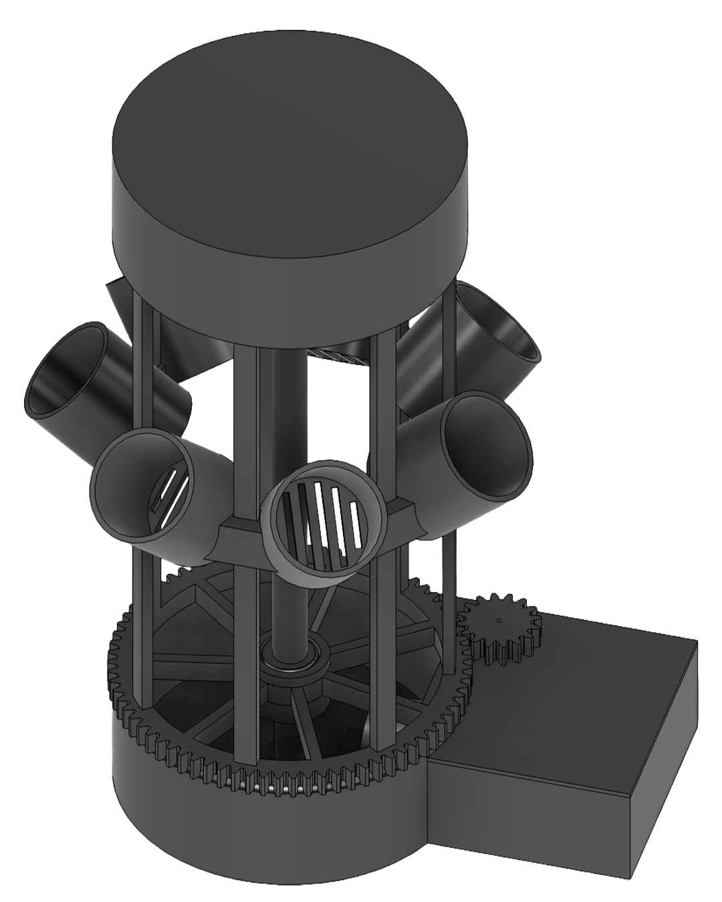

Robotics & Mechanical Design | Athlete | Educator
A rotating, self-watering plant tower for condos too small for a garden, taken from a pencil sketch to a full Fusion 360 assembly.
My first design drove the water pump with a shaft going through the reservoir wall and rested the main rotating gear directly on the base. On paper I found two problems: one failed seal in the reservoir wall would let water into the electronics, and the plastic-on-plastic contact between the base and gear would require high torque and make the spin stutter.

I built a 1:2 scale cardboard model to test sizing and placement. It showed that the tower was too short and top-heavy, since the pole carries the plants, tiers, and cover while spinning. With my mentor’s feedback, I replaced the pump shaft with a magnetic coupler, added a ball-bearing track under the gear, and swapped the suspension cables for rigid vertical rods connected from the bottom of the spinning structure, instead of the top.

The full Fusion 360 assembly puts those fixes in place. A magnet coupler spins the pump turbine through a solid wall, so nothing penetrates the reservoir. A 75-tooth gear on a bearing race rotates the chassis, and eight vertical rods hold stackable tiers of seven cups each. It isn’t built yet. Key components are sourced, and physical assembly is next.

Four seasons across Alberta, British Columbia, and Europe.
| Season | Highlights |
|---|---|
| 2021–22 | Alberta Championship: Inspire 2nd, Design 3rd, Motivate 3rd, Think 3rd, Control, Top Ranked 5th |
| 2022–23 | BC Championship: Innovate 1st. Lower Mainland Qualifier: Control 1st, Motivate 3rd |
| 2023–24 | Lower Mainland Qualifier: Inspire 1st, Winning Alliance Captain. BC Championship: Innovate 1st, Inspire 3rd |
| 2024–25 | BC Championship: Inspire 2nd. Invited to the inaugural European invite-only Premier Event European Premier Event: Innovate 2nd |
I programmed the arm’s PID control and an OpenCV auto-alignment routine, which from 13 seconds to 7. I also authored our engineering portfolio every season, and in 2024-25 it documented our capstan drive and custom box-tube slide. That documentation helped us earn 2nd Place Inspire at the BC Championship and an invitation to the inaugural European Premier Event, where we went on to win 2nd Place Innovate.
Founded and mentored a beginner two-student robotics team through robot design, programming, and an accessibility research project. Led the team to an Engineering Excellence award and qualification for the BC/Yukon Championship, where I received the Coach Award.
Taught Scratch, Python, Java, and mechanical design to 100+ students aged 5–18. Designed and led a specialized robotics workshop for 9 neurodiverse teens with the Canucks Autism Network, adapting technical concepts to individual learning needs.
Supervised youth STEM camps, leading hands-on technical lessons and recreational activities. Mentored other volunteers on classroom management, curriculum delivery, and instruction techniques, ensuring an engaging learning enviornment for campers.